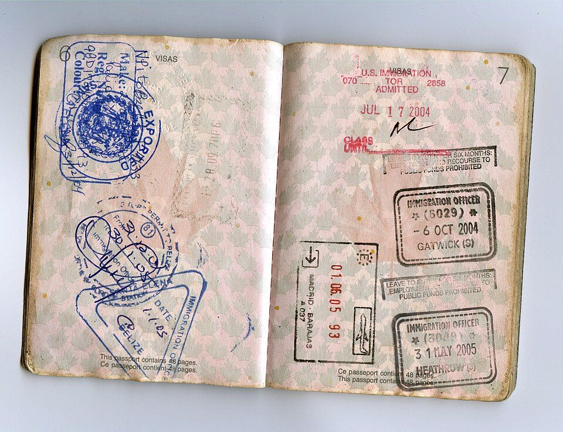
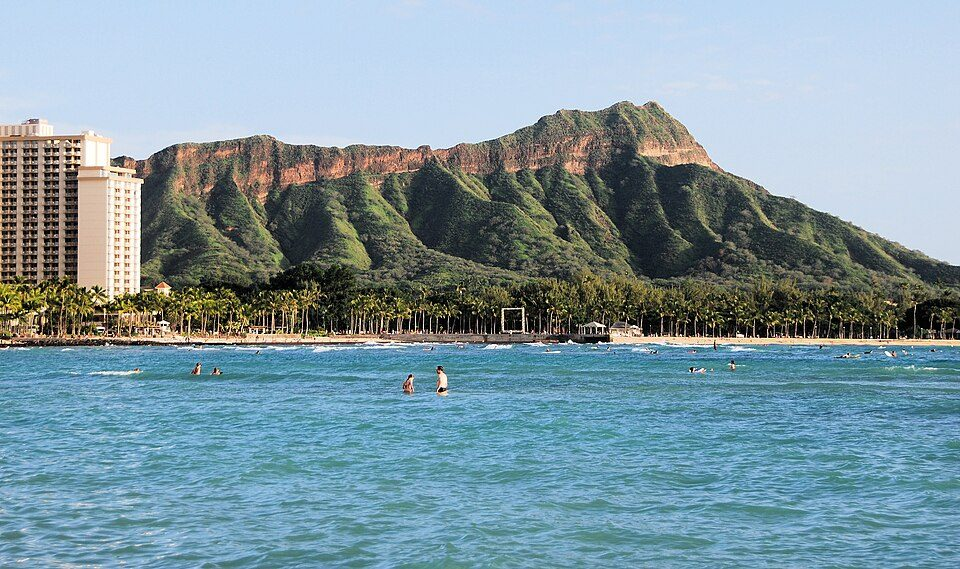

海外旅行の行き先を選ぶ：渡航者数の統計、事前の入国申請、安全と費用の決まり（2026年版）
要点まとめ
海外旅行の行き先を、「どこが人気か」だけでなく、入国の手続き・安全・費用の決まりから選べるように、公的な統計と各国の当局の情報でまとめました。2025〜2026年は、事前の申請や到着カードの仕組みが各地で変わっています。筆者の好みで行き先を勧めることはせず、比べるための事実を並べます。国内旅行は国内旅行の行き先の記事にまとめています。
日本人の海外旅行は、どこまで戻ったか
見方: 出国日本人数は、法務省の出入国管理統計の数字を日本政府観光局（JNTO）が転記したものです[1]。2025年は前年より13.3％増えましたが[1]、過去最多だった2019年の約73％にとどまります（筆者の計算）。
2026年も、前の年をやや上回るペース
1〜9月は11,206,400人で、前年同期より3.2％増
JNTO の発表では、2026年1〜9月の出国日本人数は11,206,400人（推計値を含む）で、前年同期の10,857,235人より3.2％増えました[10]。9月だけでは1,481,900人（推計値）で、前年同月より6.3％増でした[10]。
行き先別の人数は、新しい数字がそろわない
国別の統計は、年も数え方もばらばら
JNTO は、各国・地域が公表した日本人訪問者数を転記してまとめています[11]。ただ、公開データで見られる最新の年は2022年で、国によって数え方（統計の基準）も違います[12]。このため、この記事では人気の順位は作らず、コロナ前の2019年の数字を参考として示します。
出発前の準備と、2026年7月の変更
準備の順番の目安です（筆者のまとめ）。電子渡航認証や到着カードが要るかどうかは行き先で違うので、次の章の早見表で確かめてください。
2026年7月〜 パスポートの手数料が下がった
10年旅券は電子申請で8,900円に（7,000円の値下げ）
| 種類 | 2026年6月30日までの申請 | 2026年7月1日以降の申請 |
|---|---|---|
| 10年（18歳以上） | 電子15,900円／窓口16,300円 | 電子8,900円／窓口9,300円 |
| 5年（18歳以上） | 電子10,900円／窓口11,300円 | 廃止 |
| 5年（18歳未満・12歳以上） | 電子10,900円／窓口11,300円 | 電子4,400円／窓口4,800円 |
| 5年（12歳未満） | 電子5,900円／窓口6,300円 | 電子4,400円／窓口4,800円 |

2026年7月〜 出国税（国際観光旅客税）が3倍に
出国1回につき1,000円から3,000円に
日本から出国する人が、航空券などの代金に上乗せされる形で払う税金です[2]。
パスポートの残りの有効期間
必要な残りの期間は、行き先によって違う
補足
電圧やコンセントの形の違いは、コンセントと電圧の記事にまとめています。
行き先ごとの事前の手続き（早見表）
日本の旅券を持つ人が、観光で主な行き先へ行く場合の手続きです。料金は各国の通貨で、調査時点のものです。
| 行き先 | 事前の申請・登録 | 料金 | ビザなしの滞在 | 押さえておく日付 |
|---|---|---|---|---|
| 韓国 | K-ETA は免除中。電子入国申告（e-Arrival card）もある[24] | K-ETA を申請するなら10,000ウォン[25] | 90日以内[24] | K-ETA の免除は2026年12月31日まで[7] |
| 台湾 | オンライン事前入境登録（訪問の3日前以降）[21] | 無料[21] | 90日以内[21] | 2025年10月1日から必要[21] |
| 中国 | 不要（ビザ免除）[26] | — | 30日以内[26] | ビザ免除は2026年12月31日まで[8] |
| タイ | タイデジタル到着カード（TDAC。到着の3日前から）[27] | 無料[28] | 30日[27] | 2026年9月15日に60日から短縮[27] |
| ベトナム | 不要（ビザ免除）[19] | — | 45日以内[19] | — |
| シンガポール | SG Arrival Card（到着日を含む3日以内）[29] | 無料[29] | 3か月以内（入国時に14〜30日の許可）[30] | — |
| マレーシア | デジタル到着カード MDAC（出発3日前から）[20] | 今回は未確認 | 3か月以内[20] | 2023年12月1日から義務[20] |
| インドネシア | 到着ビザ（VOA）と申告「All Indonesia」[18] | バリ島は観光税150,000ルピア[31] | VOA で30日（1回だけ30日延長可）[18] | All Indonesia は2025年9月1日から[18] |
| フィリピン | eTravel への登録[22] | — | 30日以内[22] | — |
| 米国（ハワイを含む） | ESTA（72時間以上前の申請を推奨）[23] | 40.62ドル[4] | 90日以下[32] | 2026年10月16日から40.62ドル[4] |
| カナダ | eTA[33] | 7カナダドル[33] | 今回は未確認 | eTA は5年間有効[34] |
| 英国 | ETA[5] | 20ポンド[5] | 最長6か月[5] | 2026年2月25日から必須[35] |
| シェンゲン協定の国（フランス・イタリアなど） | ETIAS は未開始。国境で顔と指紋を登録（EES）[36] | ETIAS が始まれば20ユーロ[6] | 180日のうち90日まで[6] | EES は2026年4月10日に完全実施[36] |
| オーストラリア | ETA（アプリで申請）[37] | 20豪ドル（アプリ利用料）[37] | 1回3か月まで[37] | — |
| ニュージーランド | NZeTA[38] | 観光税（IVL）100NZドルを同時に払う。NZeTA の申請料は未確認[39] | 3か月以内[38] | NZeTA は2年間有効[40] |
「—」は、料金や日付の決まりがないか、この記事では扱っていないものです。
注意
韓国の K-ETA の免除と中国のビザ免除は、どちらも2026年12月31日が期限です[7][8]。2027年以降の扱いは、調査日の時点では公表を確認できませんでした。年明け以降に出発する旅行では、延長されたかどうかで手続きが変わります。
2025〜2026年に変わった、おもな入国手続きと料金です。
- 2025年2月24日
韓国：到着前にできる電子入国申告が始まる
- 2025年5月1日
タイ：デジタル到着カード（TDAC）を導入
- 2025年9月1日
インドネシア：申告制度「All Indonesia」が始まる
- 2025年9月30日
米国：ESTA が21ドルから40ドルに
- 2025年10月1日
台湾：オンライン事前入境登録が必要に
- 2025年10月12日
欧州：EES の段階的な運用が始まる
- 2026年1月1日
米国：ESTA が40.27ドルに。ハワイの宿泊税が11.00％に
- 2026年2月25日
英国：ETA の取得が必須に
- 2026年4月10日
欧州：EES が完全実施。旅券のスタンプに代わる
- 2026年7月1日
日本：出国税が3,000円に。旅券の手数料が下がる
- 2026年9月15日
タイ：ビザなしの滞在が60日から30日に
- 2026年10月16日
米国：ESTA が40.62ドルに
- 2026年12月31日
韓国 K-ETA の免除と、中国のビザ免除の期限
| 行き先 | 日本との時差 |
|---|---|
| 韓国（ソウル） | 時差なし[44] |
| 台湾（台北） | 日本より1時間遅い[45] |
| シンガポール | 日本より1時間遅い[46] |
| タイ（バンコク） | 日本より2時間遅い[47] |
| ハワイ（ホノルル） | 日本より19時間遅い（日本の深夜0時が、前日の朝5時）[48] |
欧米・オセアニアは「電子渡航認証」
アメリカの ESTA：料金は毎年度変わる
2026年10月16日から40.62ドル
ESTA は、90日以下の観光や短期の商用でアメリカへ行く日本国籍の人が、飛行機や船に乗る前に取る電子渡航認証です[32]。料金は2025年9月30日に21ドルから40ドルになり[41]、その後は会計年度ごとの物価調整で、2026年1月1日に40.27ドル[42]、10月16日に40.62ドルになりました[4]。
注意
外務省は、ESTA を申請代行サイトで手続きして、本来の数倍の手数料を請求された事例があるとして、米国政府の公式サイトから申請するよう呼びかけています[23]。

2026年2月〜 イギリスの ETA が必須に
料金は20ポンド。最長6か月の滞在に使える
英国政府は、2026年2月25日から ETA の取得を英国への渡航の必須条件にしました[35]。GOV.UK によると、ETA の料金は20ポンドで、英国などに最長6か月滞在できます[5]。
ヨーロッパの EES：入国のときに顔と指紋を登録
2026年4月10日に完全実施。スタンプに代わる
EES（出入域システム）は、短期滞在で欧州29か国の外側の国境を越える EU 以外の人を、そのたびに登録する仕組みです[36]。名前、旅券の情報、指紋と顔の画像、出入国の日付と場所を記録します[36]。2025年10月12日に段階的に始まり、2026年4月10日に完全実施となって、旅券へのスタンプに代わりました[36]。
ヨーロッパの ETIAS は、まだ始まっていない
始まれば20ユーロ。開始日は未発表
ETIAS（欧州渡航情報認証制度）は、ビザなしで欧州30か国を短期（180日のうち90日まで）訪れる人に、事前の申請を求める制度です[6]。欧州委員会のページでは、調査日の時点で運用されておらず、具体的な開始日は数か月前に知らせるとしています[6]。料金は、以前の案の7ユーロから20ユーロに決まりました[6]。
くわしく
- 外務省のイタリアのページは「2026年第4四半期から導入予定」と書いている[49]
- 欧州委員会の説明とは食い違うため、この記事では「開始日は未発表」とした
カナダの eTA
7カナダドルで、5年間有効
カナダ政府によると、eTA の料金は7カナダドルです[33]。外務省の説明では、有効期間は5年間で、その前に旅券の期限が来る場合は、旅券の期限までです[34]。
オーストラリアの ETA、ニュージーランドの NZeTA
どちらも、短期の観光でも事前の申請が必要
外務省は、日本の旅券で90日以内の観光などでオーストラリアへ行く場合も、ETA が必要としています[50]。オーストラリア内務省によると、ETA はアプリで申請し、利用料の20豪ドルのほかに料金はかからず、1回に3か月まで滞在できます[37]。ニュージーランドは、3か月以内の観光ならビザは要りませんが、NZeTA の申請が必要です[38]。
アジアは「オンラインの到着カード」と期限つきの免除
期限あり 韓国：K-ETA は2026年末まで免除
90日以内の観光はビザなし。K-ETA も免除中
韓国は、90日以内の観光などなら査証なしで入国できます[24]。電子旅行許可（K-ETA）は、日本を含む22か国・地域で一時的に免除されていて[24]、韓国法務部は、免除の延長期間を2026年1月1日〜12月31日（韓国時間）と告知しています[7]。
期限あり 中国：30日以内のビザ免除は2026年末まで
期限は2026年12月31日24時（北京時間）
中国政府は、日本などに対する一方的なビザ免除を、2026年12月31日24時まで延長しました[8]。在中国日本国大使館によると、免除される滞在は30日以内で、商用・観光・親族訪問・交流訪問などが対象です[26]。
くわしく
- 外務省の中国の安全対策基礎データは、延長前の期限（2025年12月31日）のまま[51]
台湾：オンライン事前入境登録が必要に
2025年10月1日から。訪問の3日前以降、無料
外務省によると、台湾は観光などで90日以内の滞在なら査証が免除されます[21]。2025年10月1日からは、台湾を訪れる際にオンライン事前入境登録が必要になり、訪問の3日前以降に無料で登録できます[21]。
2026年9月〜 タイ：ビザなしの滞在が30日に
到着カードは、到着の3日前からオンラインで登録
タイは2025年5月1日から、タイデジタル到着カード（TDAC）を導入しています。登録は、タイ到着の3日前（到着日を含む）からできます[27]。公式サイトは、料金はかからないとしています[28]。
シンガポールとマレーシアも、到着カードはオンライン
どちらも3日前から登録できる
シンガポール入国管理局によると、SG Arrival Card は到着日を含む3日以内に提出し、料金はかかりません[29]。マレーシアは2023年12月1日から、空港に着く国際線の乗客に、デジタル到着カード（MDAC）の登録を義務づけていて、出発3日前から登録できます[20]。
インドネシア（バリ島）：ビザは到着したときに
日本人のビザ免除は停止中。到着ビザは30日
外務省によると、インドネシアの訪問ビザ免除は、日本国籍の人への運用が停止中です。到着時に取る訪問ビザ（VOA）は30日間有効で、1回だけ30日延長できます[18]。2025年9月1日からは、税関・検疫に入国の情報も加えて登録する「All Indonesia」が始まりました[18]。バリ州の公式サイトでは、観光税は150,000ルピアです[31]。
くわしく
- 到着ビザ（VOA）の料金は、今回は確かめられなかった
ベトナムとフィリピン
ベトナムは45日、フィリピンは30日までビザなし
ベトナムは、日本国民なら45日以内の滞在は査証が免除されます。入国時に旅券の有効期間が6か月以上あり、帰国などの航空券を持っていることが条件です[19]。フィリピンは、30日以内ならビザは要りませんが、eTravel への登録と、フィリピンを出国する航空券が必要と案内されています[22]。
安全：危険情報の読み方と備え
外務省の危険情報は4段階
レベルの数字は、国どうしを比べたものではない
外務省は、国・地域ごとの危険情報を4つの段階で出しています[52]。レベル分けは危険の度合いを分かりやすく区分するための工夫で、事件や事故の起きる頻度を国どうしで統計的に比べたものではないと説明しています[52]。
| レベル | 外務省の呼びかけ |
|---|---|
| レベル1 | 十分注意してください。 |
| レベル2 | 不要不急の渡航は止めてください。 |
| レベル3 | 渡航は止めてください。（渡航中止勧告） |
| レベル4 | 退避してください。渡航は止めてください。（退避勧告） |
よく行く国にも、一部の地域にレベルが出ている
タイは国境付近と南部の一部にレベル2・3
危険情報の一覧（2026年7月13日更新）では、インドネシア（ジャカルタ・バリ島を含む）、フィリピン（マニラ首都圏を含む）は、レベル2・3の地域を除く全域がレベル1、香港は全土がレベル1です[53]。タイは、カンボジアとの国境付近と、南部の一部の県にレベル2とレベル3が出ています[53]。
在外公館の援護は、2025年に12,239件
犯罪被害が2,543件、事故・災害が335件
外務省の海外邦人援護統計では、2025年に在外公館などが援護した件数は12,239件、人数は10,928人でした[54]。件数の内訳は、犯罪被害2,543件、犯罪加害430件、事故・災害335件、その他8,931件です[54]。
見方: この統計は、在外公館などが実際に援護した件数で、海外で起きた事件や災害の件数を表すものではありません[54]。日本人の渡航者や在留者が多い所ほど件数は多くなりやすいので、危険度の順位として読まないほうがよいと筆者は考えます（筆者の見解）。
たびレジに登録する
在外公館からの緊急の連絡がメールで届く
外務省の「たびレジ」に登録すると、在外公館からの緊急一斉連絡メールなどが届きます[55]。
海外旅行保険と、カードの付帯保険
外務省は加入を勧めている。カード付帯は中身を確認
外務省は、予期できないトラブルに備えて海外旅行保険に入っておくことを勧めています[56]。おもな補償は、診療費・入院費・緊急移送費、家族などが駆けつける渡航・宿泊の費用、携行品の損害、賠償責任です[56]。クレジットカードの付帯保険は、限度額やサービス・条件の範囲がカードによって違うので、内容をよく確かめるよう勧めています[56]。
予防接種は、出発の3か月以上前から
黄熱の予防接種の証明書を求める国もある
厚生労働省検疫所（FORTH）によると、おもにアフリカや南米の熱帯地域に、入国時に黄熱の予防接種証明書を求める国があります[57]。予防接種は、できるだけ出発の3か月以上前から始めるよう勧めています[57]。
飛行機そのものの安全の仕組みは、飛行機の窓と安全設計の記事にまとめています。
費用を左右する決まり
燃油サーチャージは、航空券の運賃とは別にかかる
欧米は片道62,000円（ANA、11〜12月購入分）
ANA の燃油特別付加運賃（燃油サーチャージ）は、日本発の1人1区間片道あたりの額で、購入した時期によって決まります[9]。往復なら2区間分かかります。ANA は、政府による航空機燃料への補助の効果を踏まえて、額を軽くしていると説明しています[9]。
円相場は、日付と時刻を決めて見る
11月11日17時は、1ドル158.87〜89円
日本銀行の「外国為替市況」では、2026年11月11日17時時点のドル／円は158.87〜89円、ユーロ／円は177.21〜25円でした[58]。
現地で払う税・料金も変わっている
ハワイの宿泊税は2026年から11.00％に
ハワイ州の宿泊税（TAT）は、2026年1月1日に10.25％から11.00％に上がりました[43]。
帰国するとき：免税の範囲と肉製品
おみやげは海外市価の合計20万円までが免税
税関によると、入国者1人あたりの免税の範囲は、酒類3本（1本760mlのもの）、紙巻たばこだけなら200本、香水2オンス、そのほかの品物は海外市価の合計20万円までです[60]。
社会人向けの交通・旅行のお得な情報は、社会人お得技ノート⑤ 交通・旅行にまとめています。
今回確認できなかった点
- 主な行き先までの飛行時間の目安（航空会社の公式の資料で確かめられなかった）
- 韓国・台湾などの、2025年の日本人訪問者数の公式の数字
- 韓国 K-ETA の免除と中国のビザ免除の、2027年以降の扱い
- ETIAS の開始日（欧州委員会は未発表）
- ESTA の申請画面に40.62ドルが表示されるか（料金は米国の連邦官報で確認）
- NZeTA の申請料、インドネシアの到着ビザの料金、マレーシア MDAC の料金の有無
- ニュージーランドの観光税は、政府のページの保存版（2026年2月時点）で確認した
- 日本の空港の顔認証ゲートと、果物・野菜の持ち込みの決まり（担当官庁のページが読めなかった）
出典（61件）
閲覧日はいずれも2026年11月11日〜12日
- 年別 訪日外客数、出国日本人数の推移（1964年‐2025年）（PDF）（日本政府観光局（JNTO））
- 国際観光旅客税について（国税庁）
- 旅券手数料の改定（2026年5月、PDF）（外務省）
- Certain DHS Immigration-Related Fees Required by HR-1: Fiscal Year 2027 Adjustments for Inflation（2026年10月1日）（米国 国土安全保障省（連邦官報））
- Get an electronic travel authorisation (ETA) to visit the UK（英国政府（GOV.UK））
- European Travel Information and Authorisation System (ETIAS)（欧州委員会 移民・内務総局）
- K-ETA 한시 면제 기간 연장 알림（2026年3月20日）（韓国 法務部（K-ETA 公式））
- 一方的なビザ免除政策の延長に関するお知らせ（中華人民共和国駐日本国大使館）
- 燃油特別付加運賃／航空保険特別料金について（2026年10月30日更新）（ANA（公式））
- 訪日外客数（2026年9月推計値）（2026年10月21日、PDF）（日本政府観光局（JNTO））
- 訪日外客統計（日本政府観光局（JNTO））
- 日本の観光統計データ（日本人訪問者数ランキング）（日本政府観光局（JNTO））
- Japan Fact Sheet with June 2026 data（PDF）（ハワイ州観光局（HTA））
- 旅券手数料改定前後の比較表（PDF）（外務省）
- 旅券手数料改定 関連情報（外務省）
- 国際観光旅客税のチラシ（令和8年7月1日以降の税率、PDF）（観光庁）
- シェンゲン領域諸国への渡航（外務省 海外安全ホームページ）
- 安全対策基礎データ インドネシア（外務省 海外安全ホームページ）
- 安全対策基礎データ ベトナム（外務省 海外安全ホームページ）
- 安全対策基礎データ マレーシア（外務省 海外安全ホームページ）
- 安全対策基礎データ 台湾（外務省 海外安全ホームページ）
- 安全対策基礎データ フィリピン（外務省 海外安全ホームページ）
- 安全対策基礎データ 米国（外務省 海外安全ホームページ）
- 安全対策基礎データ 韓国（外務省 海外安全ホームページ）
- K-ETA（トップページ）（韓国 法務部（K-ETA 公式））
- 中国入国のためのビザ免除措置延長（在中国日本国大使館）
- 安全対策基礎データ タイ（外務省 海外安全ホームページ）
- Thailand Digital Arrival Card (TDAC)（タイ入国管理局）
- SG Arrival Card（シンガポール入国管理局（ICA））
- 安全対策基礎データ シンガポール（外務省 海外安全ホームページ）
- Love Bali（観光税の支払い）（インドネシア バリ州政府）
- 米国への渡航：ESTA（電子渡航認証システム）（外務省 海外安全ホームページ）
- Electronic travel authorization (eTA)（カナダ政府）
- 安全対策基礎データ カナダ（外務省 海外安全ホームページ）
- 安全対策基礎データ 英国（外務省 海外安全ホームページ）
- Entry-Exit System（欧州委員会 移民・内務総局）
- Electronic Travel Authority (subclass 601)（オーストラリア内務省）
- 安全対策基礎データ ニュージーランド（外務省 海外安全ホームページ）
- How to pay the International Visitor Levy（ニュージーランド政府（govt.nz））
- How to request an NZeTA（ニュージーランド政府（govt.nz））
- CBP Immigration Fees Required by HR-1 for Fiscal Year 2025（2025年8月28日）（米国 税関・国境警備局（連邦官報））
- Certain DHS Immigration Fees Required by HR-1: Fiscal Year 2026 Adjustments for Inflation（2025年11月19日）（米国 国土安全保障省（連邦官報））
- Tax Announcement No. 2025-03（PDF）（ハワイ州税務局）
- ソウル（金浦）旅行の基本情報（ANA（公式））
- 台北(松山)旅行の基本情報（ANA（公式））
- シンガポール旅行の基本情報（ANA（公式））
- バンコク旅行の基本情報（ANA（公式））
- ホノルル旅行の基本情報（ANA（公式））
- 安全対策基礎データ イタリア（外務省 海外安全ホームページ）
- 安全対策基礎データ オーストラリア（外務省 海外安全ホームページ）
- 安全対策基礎データ 中国（外務省 海外安全ホームページ）
- 「危険情報」とは（外務省 海外安全ホームページ）
- 危険情報一覧（外務省 海外安全ホームページ）
- 2025年（令和7年）海外邦人援護統計（2026年5月、PDF）（外務省 領事局 海外邦人安全支援室）
- たびレジ・在留届共通（外務省）
- 海外旅行保険加入のおすすめ（外務省 海外安全ホームページ）
- 海外渡航のためのワクチン（予防接種）（厚生労働省検疫所（FORTH））
- 外国為替市況（2026年11月11日、PDF）（日本銀行 金融市場局）
- Venice Access Fee（ベネチア市）
- 海外旅行者の免税範囲（税関）
- 肉製品などのおみやげについて（農林水産省 動物検疫所）
写真・画像の出典（5件）
- 飛行機の窓から見た主翼と雲
写真: U.S. Department of Agriculture／Wikimedia Commons（パブリックドメイン） - パスポートに押された出入国のスタンプ
写真: Jon Rawlinson／Wikimedia Commons（パブリックドメイン） - ワイキキビーチとダイヤモンドヘッド（アメリカ・ハワイ）
写真: Ossewa／Wikimedia Commons（CC BY-SA 4.0） - 景福宮の慶会楼（韓国・ソウル）
写真: Frank Schulenburg／Wikimedia Commons（CC BY-SA 4.0） - 台北101と台北の街並み（台湾）
写真: CEphoto, Uwe Aranas／Wikimedia Commons（CC BY-SA 3.0）